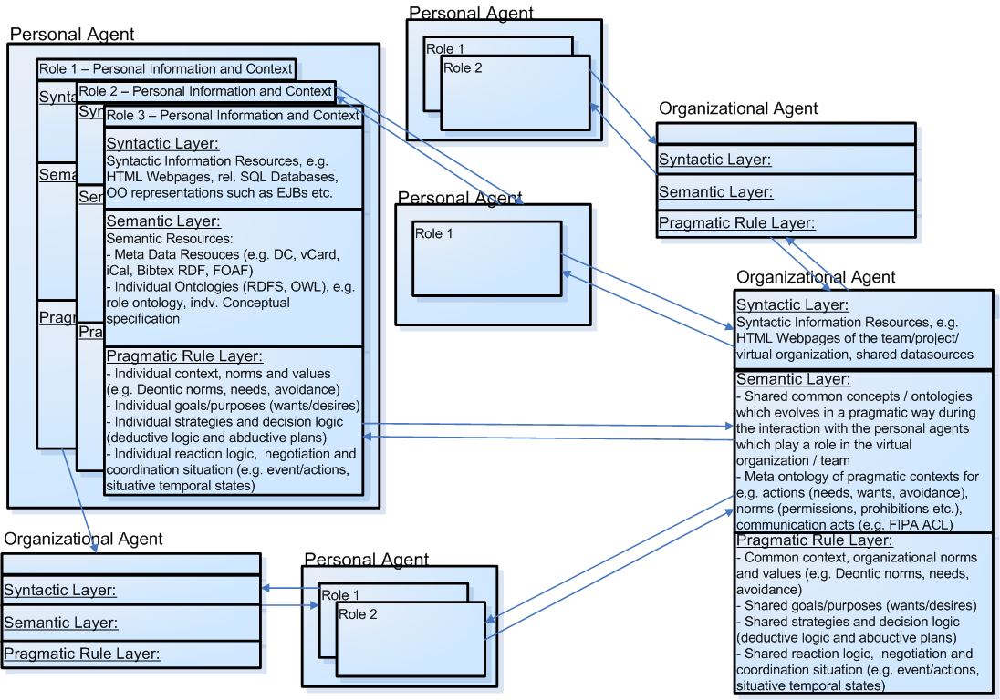
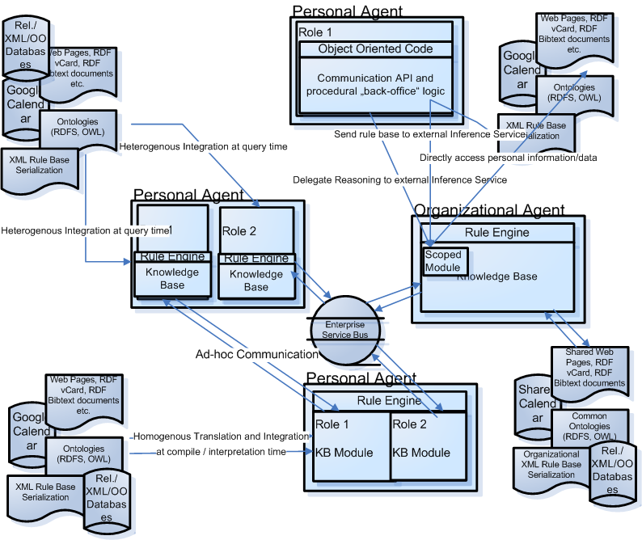

Rule Responder: A RuleML-Based Pragmatic Agent Web for Collaborative Teams and Virtual Organizations
Adrian Paschke, Harold Boley, Alexander Kozlenkov, Benjamin Craig
Introduction
The Semantic Web has the potential to profoundly change the way people collaborate. The Semantic Web builds upon XML as the common machine-readable syntax to structure content and data, upon RDF as a simple language to express property relationships between arbitrary resources (e.g., objects or topics) identified by URIs, and ontology languages such as RDFS or OWL as a means to define rich vocabularies (ontologies) which are then used to precisely describe resources and their semantics. The adoption of de facto standards such as Dublin Core, vCard, iCal for metadata descriptions of Web content and the emerging organization/person-centric vocabularies such as FOAF, SIOC and micro formats such as GRDDL are enabling a more machine-processable and relevant Web. This also prepares an infrastructure to share the relevant knowledge and its meaning between distributed self-autonomous agents and loosely coupled Web-based services and tools.
On top of the syntactic (XML) and semantic (RDF/RDFS, OWL) layer, rules play an important role to automatically and contextually transform data, derive new conclusions and decisions from existing knowledge and behaviorally act according to changed conditions or occurred events. Rules provide a powerful and declarative way to control and reuse the manifold meaning representations published on the Semantic Web. Services and intelligent agents can exploit rules to represent their decisions on how to use knowledge for a particular purpose or goal, including active selection and negotiation about relevant meanings, achievement of tasks, and internal and external reactions on occurred events, changing conditions or new contexts. This extends the Semantic Web to a rule-based Pragmatic Web where each of the syntactic-semantic-pragmatic layers is understood to include all the lower layers. The Pragmatic Web puts the independent micro-ontologies and domain-specific data into a pragmatic context such as communicative situations, organizational norms, purposes or individual goals and values. In other words, the Pragmatic Web does not intend to subsume the Semantic Web, but it intends to utilize the Semantic Web with intelligent agents and services that access data and ontologies and make rule-based inferences and autonomous decisions and reaction based on these representations. The focus is on the adequate modelling, negotiation and controlling of the use of the myriad (meta)data and meaning representations of the Semantic Web in a collaborating community of users where the individual meanings as elements of the internal cognitive structures of the members become attuned to each others' view in a communicative process. This allows dealing with issues like e.g. ambiguity of information and semantic choices, relevance of information, information overload, information hiding and strategic information selection, as well as positive and negative consequences of actions.
As a result, this Pragmatic Web becomes more usable for distributed human teams and semi-autonomous agents and loosely-coupled services: (1) It meaningfully annotates, links, and shares distributed knowledge sources according to common ontologies. (2) It employs rule-based logic for reasoning about source content and metadata. (3) It adds rule-based delegation and integration flow logic to distribute incoming requests towards appropriate virtual (team or organization) members or services and to collect their responses. By using the Semantic Web as an infrastructure for collaborative networks and by extending it with a rule-based pragmatic and behavioural layer, individuals agents and services -- with their individual contexts, decisions and efforts -- can form corporate, not-for-profit, educational, or otherwise productive virtual teams or virtual organizations that have, beside their individual context, a shared context consisting of shared concepts, joint goals and common negotiation and coordination (communication) patterns. Ultimately, this might put the ideas of the AI community on distributed self-autonomous multi agent systems (MAS) into large scale practice and might form the basis for highly flexible and adaptive Web-based service-oriented/service component architectures (SOA/SCA).
The Rule Responder project builds a service-oriented methodology and an efficient rule-based middleware to use and interchange knowledge and rules in virtual organizations and teams, and negotiate about their meanings. The addressed application domain of virtual organizations and rule-based services is of high industrial relevance. The developed Rule Responder system allows to externalize and publish and interchange rules on the Web, and to manage them in various modules deployed as online services/agents which are then weaved into the main applications at runtime. The primary contributions are as follows:
-
Extends the Semantic Web with a pragmatic rule-based layer (Pragmatic Web), which defines the rules for using information resources and ontologies to support human agents in their decisions and react partially self-autonomously by means of automated agents or services
-
Blends and tightly combines the ideas of multi-agent systems, distributed rule management systems, and service oriented and event driven architectures
-
Addresses real-world software engineering needs for a highly distributed, open, interoperable, efficient and scalable Semantic Web service and agent infrastructure
-
Demonstrates the interoperation of various distributed platform-specific rule execution environments based on Reaction RuleML as a platform-independent rule interchange and complex event processing format, where requests, queries and responses as well as rule sets are interchanged over an enterprise service bus as highly scalable and efficient transport middleware and service component / agent broker
-
Applies rule-based and multi agent technologies to the management of virtual organizations and collaborative teams
-
Applies negotiation and distributed coordination mechanisms of rule-based complex event processing and rule-based workflow like reaction rule patterns
-
Demonstrates the integration and interoperation of Web rule standards (RuleML), Object-Oriented programming (Java) and Semantic Web (RDF, RDFS, OWL), metadata (e.g. iCal, vCard, FOAF) and agent communication (e.g. ACL,KQML,OWL-QL,SDL) standards
A Rule-Based Pragmatic Agent Web Model for Virtual Organizations
A virtual organization consists of a community of independent and often distributed (sub)organizations, teams or individual agents which are members of the virtual organization. Typical examples are virtual enterprises, virtual (business) cooperations, working groups, project teams or resource sharing collaborations as in e.g. grid computing or service-oriented computing (service supply chains).
A virtual organization is typically represented by an organizational agent and a set of associated individual or smaller organizational member agents. The organizational agent might act as a single agent towards other internal and external individual or organizational agents. In other words, a virtual organization's agent can be the single (or main) point of entry for communication with the "outer" world. Typically, the organizational agent consists of the following:
-
Common syntactic information resources about the virtual organization such as public Web pages showing general contact information, goals and service offerings, but also internal resources such databases or OO representations (e.g. EJBs) to manage customer data, shared project and task data (e.g. calendars) and data about the community members.
-
A semantic layer which describes the common context of the virtual organization such as the shared common concepts and ontologies that evolved during the interaction with the community members and other external agents.
-
A pragmatic and behavioural/decision layer which consists of the organizational norms and values (e.g. deontic norms, needs, avoidance), the joint goals/interests/purposes (beliefes/ wants/ desires), the strategies and decision logic (deductive logic and abductive plans), the behavioural reaction logic, and the used negotiation and coordination interchange patterns with the community members but also with external agents.
Similar to an organizational agent, each individual agent is described by its syntactic resources of personal information about the agent, the semantic descriptions that annotate the information resources with metadata and describe the meaning with precise ontologies and a pragmatic behavioural decision layer which defines the rules for using the information resources and ontologies to support human agents in their decisions or react autonomously as automated agents/services. In fact, since each individual agent might be a member of various virtual organizations in which it plays a different role, an individual agent itself might be seen as a "small virtual organization" with shared goals but also with possibly contradicting goals in each of its roles. For instance, a person might be a member of a commercial enterprise and of a research working group with different possibly orthogonal or contradicting goals and norms such as social welfare vs. individual ambitions. If the level of autonomy of decisions is low an agent reduces to a Web service and the virtual organization is implemented by a flexible composition of several services to so called service component architecture (SCAs) which enable distributed service-based application development and integration over the Web. The following figure illustrates this general picture of a collaborative Pragmatic Agent Web (PAW) model for virtual organizations and teams.

In this architecture of a PAW model the syntactic level controls the appearance and access of syntactic information resources such as HTML Web pages. The formal nature of representation languages such as XML, RDF and OWL on the semantic level make these Web-based information more readable and processable not only to humans, but also to computers, e.g., to collect machine-readable data from diverse sources, process it and infer new knowledge. Finally, the pragmatic level defines the rules how information is used and describes the actions in terms of its pragmatic aspects, i.e. why, when and for what purpose or with what goals they are done. These rules e.g. transform existing information into relevant information of practical consequences, trigger automated reactions according to occurred complex events/situations, and derive answers to queries from the existing syntactic and semantic information resources.
The Rule Responder project focuses on the pragmatic and behavioural layer which makes use of the meaningful domain data and metadata knowledge from the syntactic and semantic layer and transforms the existing information into relevant information which is accessible by Web-based service interfaces. Declarative rules play an important role to represent the conditional decision and behavioural logic of the agents as well as the strategic and pragmatic contexts in which collaboration takes place such as communicative and coordination situations, beliefs, wants, needs and avoidances, individual values, organizational norms etc. This also includes (semi-)automated negotiation and discussion about the meaning of ontological concepts, since agents might use their own micro-ontologies and must agree on relevant shared concepts to enable an efficient communication and knowledge interchange between the nodes. Modularization and information hiding is another important concept for a virtual collaboration of independent agents, since each agents might have its own goals, strategies and rich tacit meaning of ontological concepts that should not or cannot be made explicit. That is, a certain level of ambiguity and hidden information should be allowed, as long as they do not endanger the higher goals and the communication of the virtual organization. Communication within the collaborative community and with external agents based on an adequate "webized" interchange format for rule sets, queries and derived answers but also for communicative, pragmatic and ontological semantic contexts is needed.
The project builds this rule-based pragmatic agent layer upon existing technologies and common language formats of the Semantic Web such as HTML/XML Web pages, RDF/RDFS and OWL variants of de facto standards such as Dublin Core, vCard, iCal or BibTeX/BibTeXML and other emerging vocabularies such as FOAF or SIOC, which are used to describe personal and institutional metadata and information, project and event data as well as ontological conceptualizations of the individual and common domains/vocabularies. We assume that there is already a critical mass of such data sources on the semantic and syntactic layer, e.g. RDF Bibtext libraries of publications, RDF vCard or FOAF profiles for each member and role, online event calendars using iCal or gData feeds. Furthermore, the middleware integrates data and functionality from legacy applications such as rel. databases, enterprise applications or Web services into the rule-based decision and execution logic. Depending on the particular rule execution environment the integration can happen dynamically at runtime or by pre-transformation and replication of the external data into an internal executable format (e.g. a set of logical facts replicated in the internal knowledge base).
This general approach towards a rule-based PAW model includes a great variety of technical design science and Software Engineering implementation decisions, such as how to access the various external data sources and ontologies (e.g. homogenous translation and integration vs. heterogeneous integration), how to manage and maintain the rule modules on the various levels (e.g. distributed scoped knowledge based vs. centralized knowledge base in central organizational agent node), how to integrate and interoperate with various execution environments (e.g. various rule engines with various logical expressiveness classes), how to communicate and negotiate semantics and pragmatic meaning, how to deal with complex events and situations, what is a scalable approach to operationalize and communicate between the agent nodes (e.g. enterprise service bus vs. ad-hoc communication e.g. via SOAP or JMS messages). The following figure exemplifies these technical design and implementation questions:

Rule Responder Use Case
To tackle these questions, we break down the PAW model described above into smaller use cases that address typical problems and tasks in a virtual organization. In particular, we identify and practically implement special use cases that cover the above issues and show the interplay of rule based systems in a collaborative Web based environment. In a kind of bottom-up approach, several practical use cases have been chosen as a starting point to investigate and implement practical solutions towards the Pragmatic Agent Web (PAW):
Rule Responder Use Cases
Building Blocks and Technologies of Rule Responder
The three core building blocks of Rule Responder are:
-
a common platform-independent rule interchange format to interchange rules and events between
arbitrary agent services,
-
a highly scalable and efficient agent/service-broker and communication middleware, and
-
platform-specific rule engines and execution environments.
RuleML as Platform-Independent Rule Interchange Format
The Rule Markup Language (RuleML) is a modular, interchangeable rule specification standard to express both forward (bottom-up) and backward (top-down) rules for deduction, reaction, rewriting, and further inferential-transformational tasks. It is defined by the Rule Markup Initiative, an open network of individuals and groups from both industry and academia that was formed to develop a canonical Web language for rules using XML markup and transformations from and to other rule standards/systems. The language family of RuleML covers the entire rule spectrum, from derivation rules to reaction rules including rule-based complex event processing (CEP) and messaging (Reaction RuleML), as well as verification and transformation rules.
Reaction RuleML is a general, practical, compact and user-friendly XML-serialized sublanguage of RuleML for the family of reaction rules. It incorporates various kinds of production, action, reaction, and KR temporal/event/action logic rules as well as (complex) event/action messages for complex event processing (CEP) into the native RuleML syntax using a system of step-wise extensions.
The RuleML Interface Description Language (RuleML IDL) as sublanguage of Reaction RuleML adopts the ideas of interface definition languages such as Corbas' IDL or Web Service WSDL. It describes the signatures of public rule functions together with their mode and type declarations and narrative human-oriented meta descriptions.
Enterprise Service Bus as Communication Middleware and Agent/Service Broker
To seamlessly handle message-based interactions between the responder agents/services and with other applications and services using disparate complex event processing (CEP) technologies, transports and protocols an enterprise service bus (ESB), the Mule open-source ESB, is integrated as communication middleware. The ESB allows deploying the rule-based agents as highly distributable rule inference services
installed as Web-based endpoints in the service object broker and supports the Reaction RuleML based communication between them. That is, the ESB provides a highly scalable and flexible application messaging framework to communicate synchronously but also asynchronously with external services and internal agents which are deployed on the bus. A large variety of more than 30 transport protocols provided by Mule can be used to transport the messages to the registered endpoints or external applications / tools. Usually, JMS is used for the internal communication between distributed agent instances, while HTTP and SOAP is used to access external Web services. The ESB object broker follows the Staged Event Driven Architecture (SEDA) pattern. The basic approach of SEDA is to decomposes a complex, event-driven application into a set of stages connected by queues. This design decouples event and thread scheduling from application logic and avoids the high overhead associated with thread-based concurrency models. That is, SEDA supports massive concurrency demands on Web-based services and provides a highly scalable approach for asynchronous communication. The usual processing style is asynchronous using SEDA event queues.
Platform-dependent Rule Engines as Execution Environments
Each agent / service might run one or more arbitrary rule engines to execute the interchanged queries, rules and events and derive answers on requests and reactions on detected events. Currently the Prova and OO jDREW rule engine are implemented as two rule execution environments in order to demonstrate among other things: rule interchange. Further rule engines and event correlation engines (CEP engines) are planned to join the Rule Responder project.
Prova is a highly expressive distributed Semantic Web rule engine which supports complex reaction rule-based workflows, rule-based complex event processing, distributed inference services, rule interchange, rule-based decision logic and dynamic access to external data sources, web-based services and Java APIs.
Prova follows the spirit and design of the recent W3C Semantic Web initiative and combines declarative rules, ontologies and inference with dynamic object-oriented programming and access to external data sources. One of the key advantages of Prova is its elegant separation of logic, data access, and computation and its tight integration of Java, Semantic Web technologies and enterprise service-oriented computing and complex event processing technologies.
Prova now has its own webpage: http://www.prova.ws/
OO jDREW, a deductive reasoning engine for the RuleML web rule language, is an Object Oriented extension to jDREW. OO jDREW implements Object Oriented extensions to RuleML which include:
- Order Sorted Types
- Slots
- Object Identifiers
OO jDREW is written in the Java programming language.
[further engines - TODO]
If you want to join the rule responder open source project please write an eMail to: Adrian Paschke
Summary
Recently, there have been many efforts aiming on rule interchange and building a general rule markup and modelling standard for the (Semantic) Web. This includes several important general standardization or standards-proposing efforts including RuleML, W3C RIF, OMG PRR and others. However, currently no methodological and architectural design and comprehensive implementation exists which makes this idea of a practical distributed rule layer in the Semantic Web a reality. Moreover, in the current rule interchange formats the pragmatic aspect is missing.
In the Rule Responder project we follow a constructivists design science research methodology and contribute with a rule-based middleware based on modern efficient and scalable enterprise service technologies, complex event processing techniques and standardized web rule and Semantic Web languages in combination with existing meta data vocabularies and ontologies to capture and negotiate the individual and shared semantic and pragmatic context of rule-based agents and service networks. The application in virtual organizations such as Agent communities or (business) service networks is of high practical relevance and transfers the existing work in multi-agent systems (e.g. Jade, FIPA-OS) to the Semantic-Pragmatic Web and rule-based service architecture.
Rule Responder builds upon these existing ideas and technologies in multi-agent systems and tackles the manifold challenges which are posed by the highly complex, dynamic, scalable and open distributed nature of semi-automated pragmatic agents communities or service component architectures. Our proposed design artifact exploits RuleML and Reaction RuleML for the XML-based representation of reaction rules and message based conversations at the platform-independent level as a compact, extensible and standardized rule and event interchange format. A highly scalable and efficient enterprise service bus is integrated as a communication middleware platform and web-based agent/service object broker. Via translator services the interchanged RuleML messages are translated into the platform-specific execution syntaxes of the arbitrary agents' rule execution environments. In sum, the proposed design artifact addresses many practical factors of rule-based service technologies ranging from system engineering features like modular management and encapsulation to interchangeability and interoperability between system and domain boundaries in open environments such as the Web. |